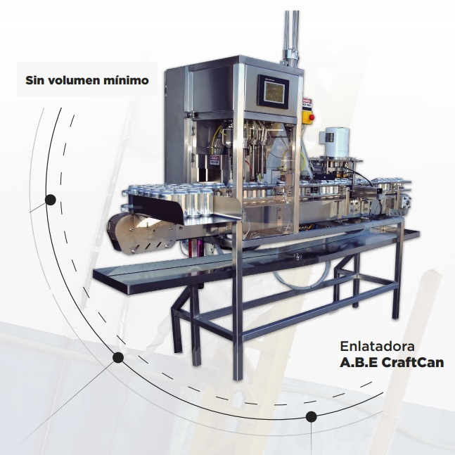
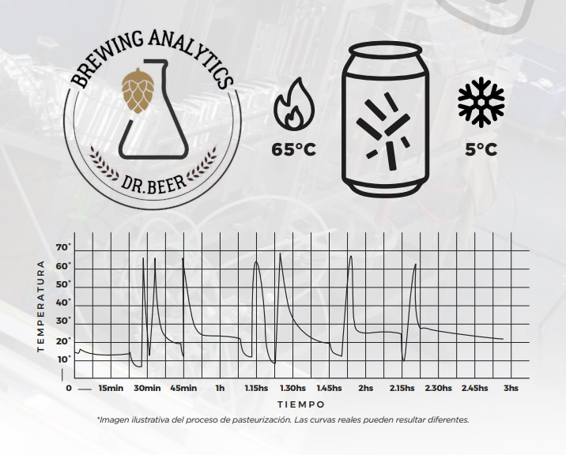
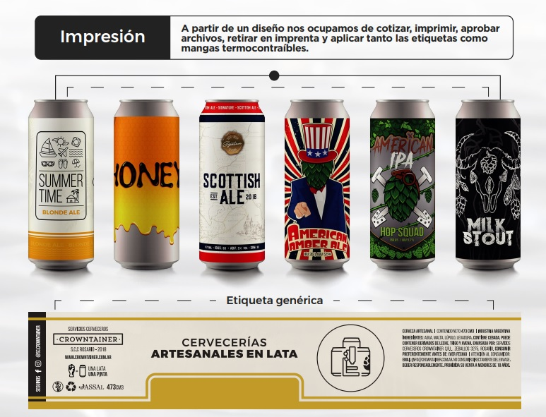
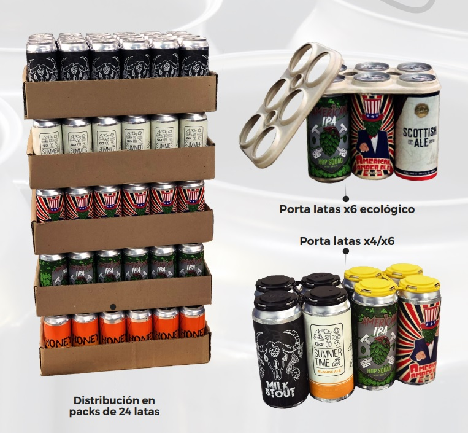

Enlatamos tú cerveza directo de barriles a latas de 473cc, utilizando un sistema de llenado y tapado automático en serie con maquinaria de primer nivel marca ABE, que garantiza la calidad y el cuidado del producto.
Ofrecemos el servicio de pasteurización de latas utilizamos las metodologías europeas de calidad EBC. Con el método por inmersión que permite maximizar canales de ventas, garantizar inocuidad del producto y brindar la posibilidad llegar a nuevos mercados.
Monitoreamos mediante sensores las curvas de temperatura que sufre la cerveza para garantizar la efectividad del proceso. Vas poder llegar a nuevos mercados sin la necesidad de frío. Para que este proceso sea realmente efectivo y poder garantizar la estabilidad de la cerveza se realizan cultivos microbiológicos por personal capacitado en el cual se cuentan en UFC ( unidades formadoras de colonias) la presencia de levaduras cerveceras, levaduras salvajes, hongos y bacterias.
Otro de los componentes de nuestro servicio es el etiquetado de las latas. Ofrecemos la aplicación de etiquetas autoadhesivas o mangas termocontraíble a elección del cliente.
Sobre las mismas ingresamos número de lote y fecha de vencimiento para la correcta trazabilidad del producto, pudiendo utilizar esta opción para adquirir una etiqueta genérica sobre la cual se puede imprimir el estilo para diferenciar varias cervezas sin invertir en una gran cantidad de diseños
Este proceso puede llevar un tiempo de 48 a 96 horas desde que ingresan los barriles a planta, dependiendo de la cantidad de litros solicitada. Las latas son devueltas en bandejas de 24 unidades con bolsas termocontraíbles para resguardarlas de viajes y manipuleo hasta que lleguen al consumidor final.
